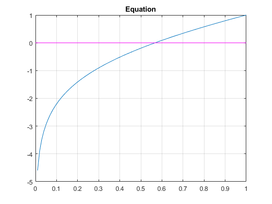
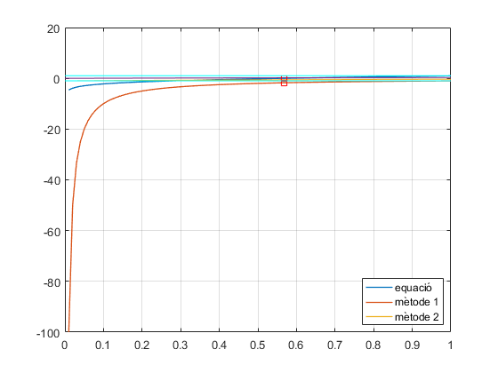

Ex 4 Full_lab4.pdf
Contents
Equation: x + ln(x) = 0
f = @(x) x + log(x);
t = 0:0.01:1;
plot(t, f(t), t, zeros(size(t)),'m'), grid, title('Equation');

Fzero Matlab
alpha = fzero(f,1)
alpha =
0.567143290409784
Iterative method #1
g1 = @(x)-log(x);
dg1 = @(x)-1./x;
x0 = 0.5;
tol = 0.0005;
N = 10;
if (abs(dg1(x0)) < 1)
[ root, x_sol ] = new_fixPoint(f,g1,x0,tol,N)
tolf = f(x_sol)
else
disp('Divergent!')
end
Divergent!
Iterative method #2
g2 = @(x)exp(-x);
dg2 = @(x) -exp(-x);
x0 = 0.5;
tol = 0.0005;
N = 20;
if (abs(dg2(x0)) < 1)
[ root, x_sol ] = new_fixPoint(f,g2,x0,tol,N)
tolf = f(x_sol)
else
disp('Divergent!')
end
root =
0.567277195970779
x_sol =
Columns 1 through 3
0.500000000000000 0.606530659712633 0.545239211892605
Columns 4 through 6
0.579703094878068 0.560064627938902 0.571172148977215
Columns 7 through 9
0.564862946980323 0.568438047570066 0.566409452746921
Columns 10 through 12
0.567559634262242 0.566907212935471 0.567277195970779
tolf =
Columns 1 through 3
-0.193147180559945 0.106530659712633 -0.061291447820028
Columns 4 through 6
0.034463882985463 -0.019638466939166 0.011107521038313
Columns 7 through 9
-0.006309201996892 0.003575100589743 -0.002028594823146
Columns 10 through 12
0.001150181515322 -0.000652421326771 0.000369983035307
Iterative method #3
g3 = @(x) (x+exp(-x))/2;
dg3 = @(x) (1-exp(-x))/2;
x0 = 0.5;
tol = 0.0005;
N = 20;
if (abs(dg3(x0)) < 1)
[ root, x_sol ] = new_fixPoint(f,g3,x0,tol,N)
tolf = f(x_sol)
else
disp('Divergent!')
end
root =
0.567113193196996
x_sol =
Columns 1 through 3
0.500000000000000 0.553265329856317 0.564167140639515
Columns 4 through 6
0.566500424321497 0.567004214569293 0.567113193196996
tolf =
Columns 1 through 3
-0.193147180559945 -0.038652261845931 -0.008237582095530
Columns 4 through 6
-0.001777025169918 -0.000384327609908 -0.000083166713787
Estudi convergència
y=ones(size(t));
plot(t,f(t),t,dg1(t),t,dg2(t),t,dg3(t),alpha, 0, 'rs', alpha, dg1(alpha),'rs',t,y,'c',t,-y,'c','LineWidth',1), grid
legend('equació', 'mètode 1','mètode 2','Location', 'best')
